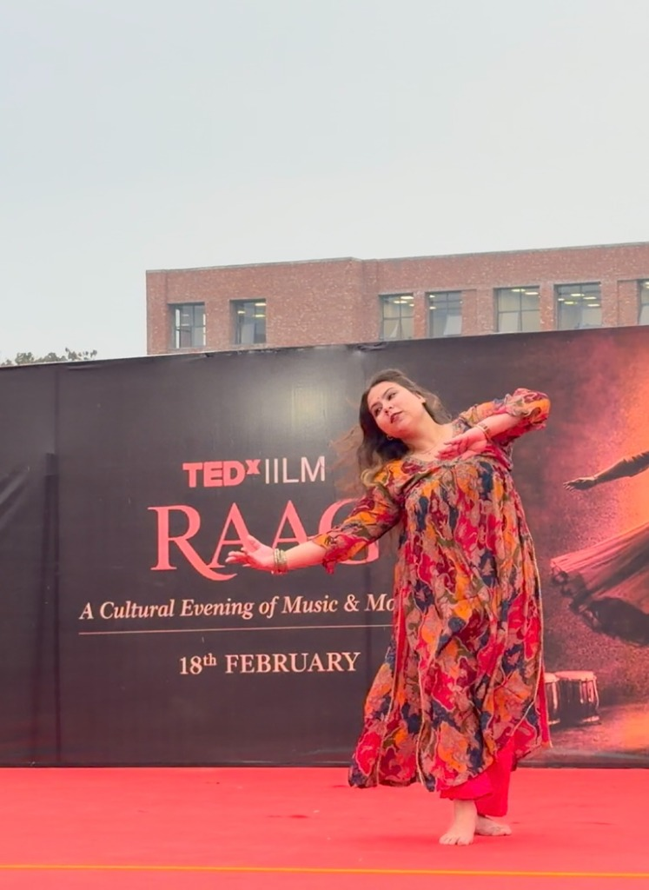
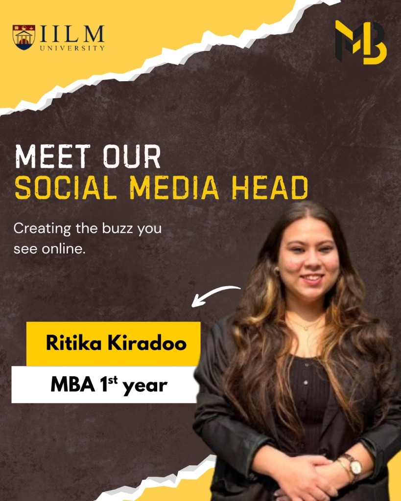
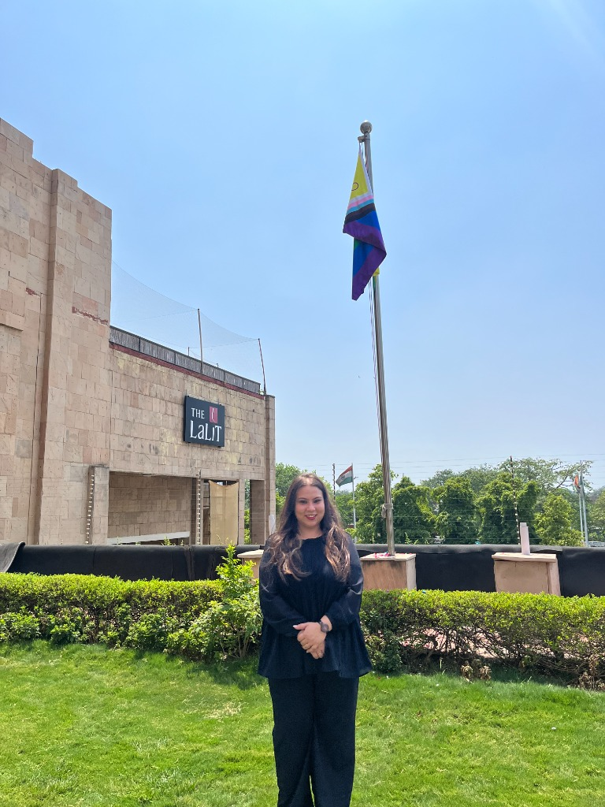
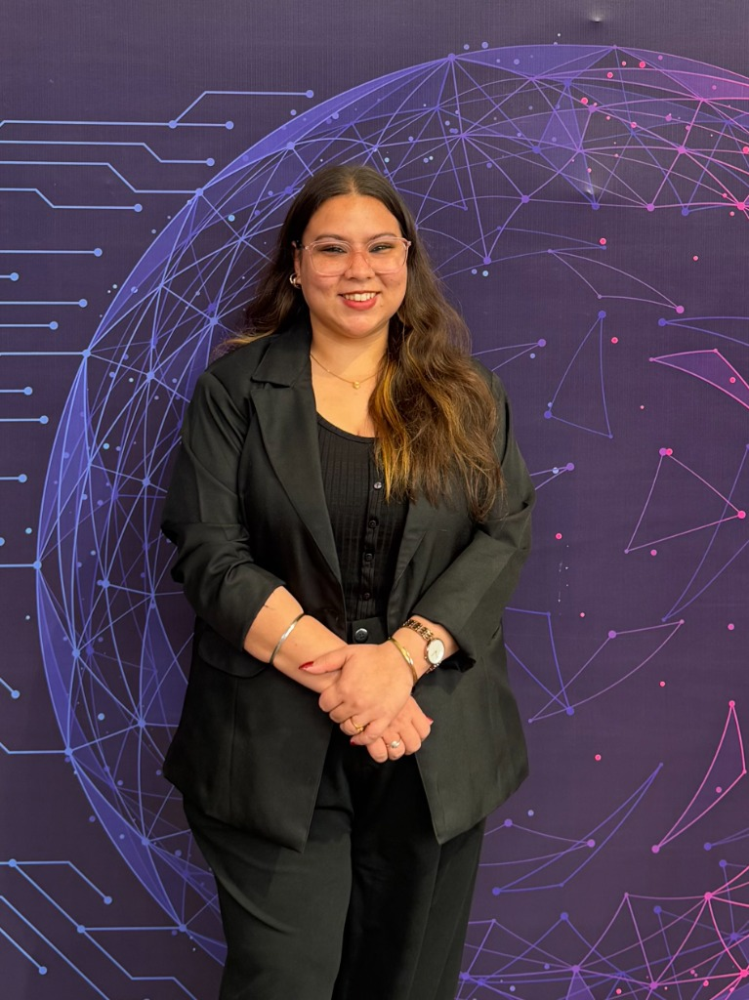
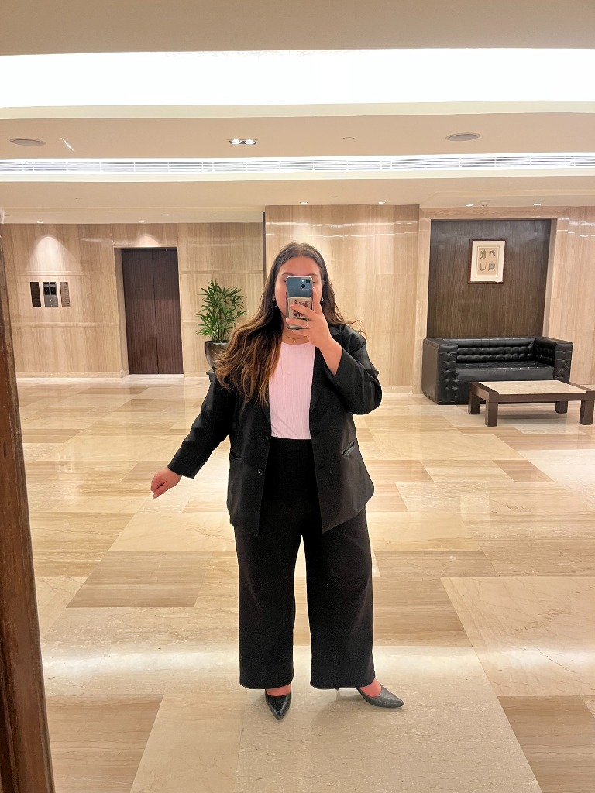
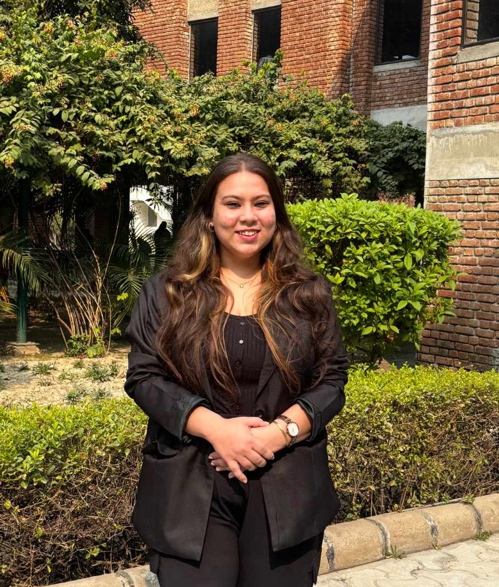
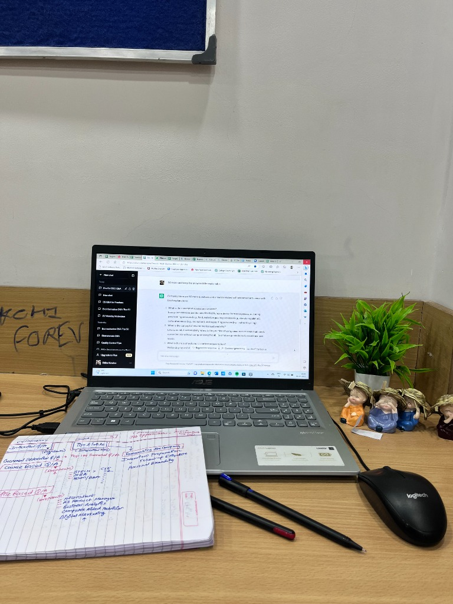

I am Ritika Kiradoo, an MBA student at IILM University, Greater Noida. I specialize in digital marketing architecture, social media strategy, high-touch client handling, and cross-functional leadership—turning brand communication into sustainable growth.


TEDx Dance
MarkBuzz Lead
The LaLiT SIP
Medals & Awards Original Art
Original Art

Creator StoryBalancing marketing intuition with business logic. How my MBA journey and frontline client experiences shape my approach to modern brand building.

MBA Candidate • Marketing Strategist
Currently pursuing my Master of Business Administration (MBA) at IILM University, Greater Noida, I bring a dynamic blend of creative agility and structured business thinking. My experience bridges the worlds of digital marketing, social media strategy, client relationship management (CRM), and team leadership.
During my intensive Summer Internship Program (SIP) at The LaLiT New Delhi—one of India's premier 5-star luxury hospitality properties—I gained direct frontline experience handling high-stakes banquet sales operations, qualification of high-profile corporate inquiries, and cross-departmental coordination with banquet and F&B teams. This experience instilled in me an unyielding standard for customer empathy, executive negotiation, and operational precision.
Architecting multi-channel digital journeys that harmonize organic discovery, search alignment, and data-driven performance measurement.
Designing retention-focused content ecosystems, structured editorial calendars, and brand storytelling that engages authentic communities.
Frontline client handling, consultative sales inquiry diagnostics, high-touch stakeholder communication, and post-service retention.
Leading student cohorts, coordinating campus initiatives at IILM Greater Noida, and uniting cross-functional teams to meet project deadlines.
Focused on Strategic Marketing Management, Consumer Psychology, Integrated Marketing Communications (IMC), and Business Analytics. Combining academic rigor with practical case methodology.
Authentic, documented on-ground experience in luxury hospitality sales, client relationship management, and digital brand coordination.
Engaged in hands-on summer training within the Banquet Sales department at The LaLiT New Delhi. Actively participated in the end-to-end sales lifecycle—from client inquiry receipt and site walkthroughs to banquet event order (BEO) coordination and post-event relationship nurturing.
Handled prospective client inquiries for corporate conventions, luxury celebrations, and conferences. Conducted need-analysis to match event scale with appropriate banquet spaces and commercial packages.
Facilitated physical site inspections with corporate event organizers and individual hosts, walking them through hall capacities, staging configurations, and customized food & beverage menus.
Liaised directly between the banquet sales team, culinary staff, banquet operations, and audio-visual engineering to translate client requirements into seamless Banquet Event Orders (BEOs).
Gathered formal client feedback post-event, addressed customer queries, and assisted senior managers in preserving long-term corporate relationship pipelines.
Brand Strategy Projects • Digital Content Execution

Academic & Institutional Initiatives • IILM University
Strategic frameworks, marketing deliverables, and client solutions developed across academic and professional engagements.
 Digital Strategy
Digital Strategy
An end-to-end digital marketing blueprint that aligns top-of-funnel organic discovery with structured conversion touchpoints across search, social, and direct channels.
Audience Journey Architecture, 30-Day Channel Matrix, Performance KPI Dashboard.
A comprehensive social strategy engineered to move away from vanity broadcast metrics toward high-retention content buckets, narrative hooks, and active community dialogue.
4-Pillar Content Ecosystem, Short-Form Script Framework, Community Engagement Protocol.
 Client & CRM
Client & CRM
Synthesizing luxury hospitality frontline insights from The LaLiT New Delhi into a codified enterprise client management playbook, covering inquiry qualification to post-event care.
Inquiry Diagnostic Checklist, BEO Operational Alignment Map, Client Satisfaction Audit.
An analytical MBA research study mapping industry incumbents against challenger brands, uncovering underserved consumer segments and actionable brand positioning white space.
Perceptual Positioning Matrix, Competitor Gap Analysis, Value Proposition Roadmap.
Consulting-grade breakdowns demonstrating problem framing, structural analysis, operational execution, and tangible takeaways.
Business Context: Luxury banquet operations operate under high pressure with zero margin for error. A breakdown in client expectation-setting or cross-departmental coordination can jeopardize significant revenue and corporate brand equity. This study analyzes the end-to-end client handling framework practiced at The LaLiT New Delhi.
Rigorous lead qualification: analyzing event type, guest profile, acoustic requirements, and budget constraints before proposing tailored spaces.
Guided physical site inspections focusing on spatial flow, customized dining configurations, and direct stakeholder reassurance.
Translating client agreements into granular Banquet Event Orders (BEOs) aligning culinary, service, engineering, and security squads.
Structured debrief sessions with the client to capture feedback, promptly resolve discrepancies, and solidify recurring booking agreements.
High-value client retention in high-stakes environments is driven by rigorous cross-departmental operational transparency and proactive empathy.
Business Context: In an era of escalating customer acquisition costs (CAC) and saturated social feeds, brands relying solely on paid broadcast ads suffer from audience fatigue. This case study models an organic-first content architecture that builds genuine community authority.
Deep actionable industry insights, demystified concepts, and practical frameworks that position the brand as an authentic subject authority.
Humanized storytelling showcasing real team workflows, operational realities, and core company values to build emotional resonance.
Client case snippets, testimonials, and tangible results proving real-world credibility without aggressive sales messaging.
Clear, focused invitations for consultation, discovery calls, or service trials directed at warmed, engaged followers.
Consistency and value-first distribution generate durable brand trust and organic inquiries that outperform fleeting promotional bursts.
"More than a marketer. A leader, creator, performer and an artist at heart."
Some of my most meaningful experiences happen outside textbooks and boardrooms. From leading social media initiatives and creating content to performing on stage, winning competitions and exploring art, I believe every experience adds a different dimension to who I am.
As the Social Media Head of MarkBuzz – The Marketing Club at IILM University, I contribute to shaping the club's digital presence and communicating its activities to the student community. My involvement includes planning social media content, creating and publishing posts, designing creatives, promoting campus initiatives and keeping the audience engaged.
Being part of the club allows me to combine my interest in marketing with creativity, collaboration and hands-on content execution.
Dance has always been one of my favourite ways of expressing myself. Winning First Prize in the dance competition at TEDx Raag was a special achievement and a memorable moment for me. It reflects the dedication, practice, confidence and passion that I bring to everything I love doing.
For me, dance is not just a hobby; it is a form of expression that keeps me energetic, disciplined and creatively connected.
Learning and achievement have never been limited to classrooms for me. I have actively participated in different extracurricular activities, including sports competitions, collaborative group activities, brand-related challenges and other creative pursuits. These experiences have given me opportunities to challenge myself, work with others, participate in healthy competition and celebrate achievements beyond academics.

I enjoy creating and communicating ideas through words and visuals. Content writing and content creation allow me to experiment with storytelling, understand different audiences and express ideas in engaging ways.
Whether it is developing written content, creating social media posts or exploring creative formats, I enjoy the process of turning an idea into something people can connect with.
Outside marketing and academics, I love exploring my creative side. Dancing allows me to express myself through movement, while painting gives me the freedom to experiment with colours, ideas and imagination.
These interests remind me that creativity is not restricted to a profession. It is something I enjoy bringing into different aspects of my life.
"Because the best version of me is built not just through what I study or do, but through everything I explore, create and experience."
Continuous learning and professional development across digital marketing, advertising, content creation and business analytics.
Professional training covering digital marketing fundamentals, online marketing channels, audience engagement, content distribution and campaign execution.
Specialised learning in Google Ads, including search advertising, keyword targeting, campaign structure, ad optimisation and performance measurement.
Training focused on content creation, content marketing strategies, social media platforms, audience engagement and effective digital communication.
Developed an understanding of business analytics, data interpretation and analytical approaches to support informed business decision-making.
A clean, printable, and recruiter-ready executive curriculum vitae reflecting verified academic credentials and industry exposure.
Ambitious and articulate MBA candidate at IILM University, Greater Noida, equipped with hands-on experience in digital marketing, social media strategy, client relationship management, and banquet sales operations at The LaLiT New Delhi. Known for high emotional intelligence, cross-departmental coordination, structured problem solving, and a clear focus on bottom-line business outcomes.
Campaign Architecture, Social Media Strategy, Content Matrix Design, Brand Positioning, Funnel Mapping.
Consultative Selling, Banquet Operations, BEO Alignment, Client Walkthroughs, Conflict De-escalation.
Cross-Functional Collaboration, Campus Event Management, Presentation & Pitching, Team Mentorship.
Market Research, Competitive Audits, Consumer Insights Analysis, Microsoft Excel & PowerPoint.